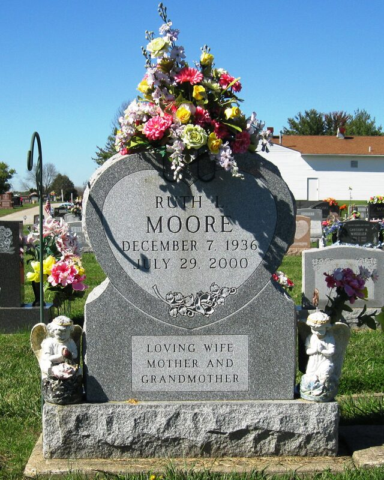

Brewster line · Elmer's first wife · Cincinnati, Barstow (California), and Fairborn, Ohio
Also known as: Ruth Lee Wainscott (maiden name); Ruth Lee Brewster; Ruth Lee Moore (last married name)
Profile status: SUPPORTED birth, parents, death and burial rest on her Find a Grave memorial and family trees; her marriage to Elmer rests on the family account and trees; no marriage record has been found
Ruth in later years (photo shared on Geni by Cathy Beth Burton)
Quick Facts
Born
7 December 1936, Cincinnati, Hamilton County, Ohio SUPPORTED Find a Grave memorial and an Ancestry tree profile; the Ohio Birth Index entry has not yet been read.
Died
29 July 2000, Kettering, Montgomery County, Ohio, aged 63, as Ruth Lee Moore SUPPORTED Find a Grave memorial and an Ancestry tree profile; her husband's 2011 obituary says she died before him. The Ohio death record has not yet been read.
Buried
Byron Cemetery, Fairborn, Greene County, Ohio, Section 8 SUPPORTED; Find a Grave memorial 119648900, where her husband Gobelle Moore is also buried
Immediate Family
Parents
Ray Henry Wainscott (1906–1965) SUPPORTED Elizabeth Mae (Lawrence) Wainscott (1913–1958) SUPPORTED Her Find a Grave memorial links both parents, and an Ancestry tree profile gives the same names. Their Ohio birth and death index entries have not been read.
Spouses
Elmer Ellis Brewster (1935–1993), her first husband SUPPORTED; the family account says they eloped on 17 February 1951, when she was 14 and he was 16 FAMILY ACCOUNT The marriage rests on the family account, Geni and two online trees; no marriage record has been found. Gobelle Moore (1933–2011) of Fairborn, Ohio, her last husband, married about 1998–2000 SUPPORTED His 2011 obituary names his late "second wife, Ruth Moore" DOCUMENTED, and his son's 2017 obituary names his "step-mother, Ruth Moore." That this Ruth Moore is Ruth Lee Wainscott is SUPPORTED: their Find a Grave memorials link each other and they lie in the same cemetery.
Children
Cathy Bubolz
Diana Keaton
Michael Brewster
Cheryl Schaefer
Wanda Bilby
These are Elmer's five children, named in his 1993 obituary DOCUMENTED. Family photo captions show at least one of them was Ruth's FAMILY ACCOUNT, but which ones were hers is not proved UNPROVED, so none is assigned to her here. They are probably living, so only their names are shown.
Siblings
Wanda Louise Wainscott (1933–1942)
Margaret Lane Wainscott (1935–1938)
Both sisters died as children SUPPORTED; linked as her sisters on her Find a Grave memorial.
7 Dec 1936 · age 0 Born, Cincinnati, Ohio, to Ray Henry Wainscott and Elizabeth Mae Lawrence SUPPORTED
1938 and 1942 · age 1 and 5 Her sisters Margaret Lane (1938) and Wanda Louise (1942) died young SUPPORTED
17 Feb 1951 · age 14 Eloped with Elmer Brewster, aged 16 FAMILY ACCOUNT
Early 1950s Lived with Elmer in a small camper, their "house," at Barstow, California, while he served in the Marines (after January 1952) FAMILY ACCOUNT
Date unknown Her marriage to Elmer ended; he later married Mary Jane SUPPORTED
About 1998–2000 · age 61–63 Married Gobelle Moore of Fairborn, Ohio SUPPORTED
29 Jul 2000 · age 63 Died, Kettering, Montgomery County, Ohio, as Ruth Lee Moore SUPPORTED
2000 Buried, Byron Cemetery, Fairborn, Greene County, Ohio SUPPORTED
Life Story
Ruth Lee Wainscott was born in Cincinnati on December 7, 1936, the daughter of Ray Henry Wainscott and Elizabeth Mae Lawrence, and she lost both of her little sisters, Margaret Lane and Wanda Louise, when they were small. SUPPORTED The family account says that on February 17, 1951, at only fourteen, she eloped with sixteen-year-old Elmer Brewster. FAMILY ACCOUNT After Elmer joined the Marines in 1952, the young couple made their "house" in a tiny camper at Barstow, California, as a family photo caption remembers it. FAMILY ACCOUNT
The marriage later ended, and Elmer married again. SUPPORTED Late in life Ruth married Gobelle Moore, a widower of Fairborn, Ohio, about 1998–2000. SUPPORTED She died at Kettering on July 29, 2000, aged 63, and was buried in Byron Cemetery at Fairborn. SUPPORTED
Photo Gallery
Ruth in later years. Photo shared by Cathy Beth Burton, Geni

Her headstone: "Ruth L. Moore, December 7, 1936 – July 29, 2000 · Loving wife, mother and grandmother." Photo by Wayne Seibert, Find a Grave
Sources and Evidence
Find a Grave, Ruth Lee Wainscott Moore, memorial 119648900: born 7 December 1936, Cincinnati; died 29 July 2000, Kettering; buried Byron Cemetery, Fairborn, Section 8; links her parents Ray Henry Wainscott and Elizabeth Mae (Lawrence) Wainscott, her sisters Wanda Louise and Margaret Lane, and her husband Gobelle Moore; one photo, her headstone, which reads "Ruth L. Moore, December 7, 1936, July 29, 2000, Loving wife, mother and grandmother" (read 6 November 2026) SUPPORTED
Find a Grave, Gobelle Moore, memorial 65550450 (1933–2011), with his obituary: "preceded in death by his first wife, Alma Jean Moore; his second wife, Ruth Moore" (read 6 November 2026) DOCUMENTED
Obituary of Michael D. Moore (1955–2017), son of Gobelle Moore: "preceded in death by his step-mother, Ruth Moore" (read 6 November 2026) DOCUMENTED
Obituary of Elmer Brewster, 1993 (clipping in the family collection): names his widow Mary Jane and his five children; does not name Ruth DOCUMENTED
Family account (notes from the family's Facebook group): "Elmer & Ruth eloped 2/17/1951 (she 14, he 16)"; photo captions of "Elmer & Ruth in their 'house' a tiny camper in Barstow, CA when dad was in the Marines" and of Elmer and Ruth with Homer Sr. FAMILY ACCOUNT
Ancestry, Ruth Lee Wainscott person profile, compiled from member trees: same birth, death and parents; spouses Elmer E. Brewster (1935–1993) and Gobelle Moore (1933–2011); record hints for Ohio birth and death indexes and an Ohio divorce abstract (tree lead only; hints not opened) UNPROVED
FamilySearch Family Tree, L698-NK8 (Elmer): gives a wife Ruth Lee Wainscott, married 1951 (tree lead only) UNPROVED
Geni, read 2026-11-03: Elmer Brewster profile, names Ruth Lee as his wife (tree lead only) UNPROVED
Grades: DOCUMENTED an original record says it · SUPPORTED several records point to it · FAMILY ACCOUNT the family's own telling · UNPROVED a lead, not proved.
Research Notes and Open Questions
Ohio death record or certificate, Montgomery County, July 2000: would confirm her parents and marital status.
Ohio divorce index: an Ancestry hint points to an Ohio divorce abstract under Ruth Lee Wainscott (1962–2007 range, not opened) UNPROVED. It may record the end of her marriage to Elmer, or another marriage. Try FamilySearch "Ohio, Divorce Index."
1951 marriage record: try Kenton or Campbell County, Kentucky (teenage couples from Cincinnati often married across the river), and Hamilton County, Ohio; the Kentucky Marriages 1785–1979 index is on FamilySearch.
Obituary: none found online. Try the Dayton Daily News and the Fairborn Daily Herald, 30 July – 3 August 2000. It may name her children and settle which of Elmer's children were hers.
Social Security application index: not yet found under Wainscott or Brewster; try Moore, Ruth L.
Name: people-search listings suggest she used the surname Brewster until her marriage to Gobelle Moore UNPROVED.
Do not confuse her with other women of similar name, including Ruth LaVerne (McHone) Moore (1933–2015) of Hamilton, Ohio, who also married in 1951.
A portrait of Ruth in later years, shared on Geni by Cathy Beth Burton, is now shown; her headstone is in the gallery. The family photo captions of Elmer and Ruth in the 1950s are noted, but the images have not been located.
Ruth's profile is filed in Elmer Brewster's folder, like other spouses in their partner's folder.
DNA
No DNA matches linked yet.
Profile history: Updated 6 November 2026 with her maiden name, parents and sisters, birth, death and burial, both marriages, the Barstow years, a full life story and sources; headstone photo added.